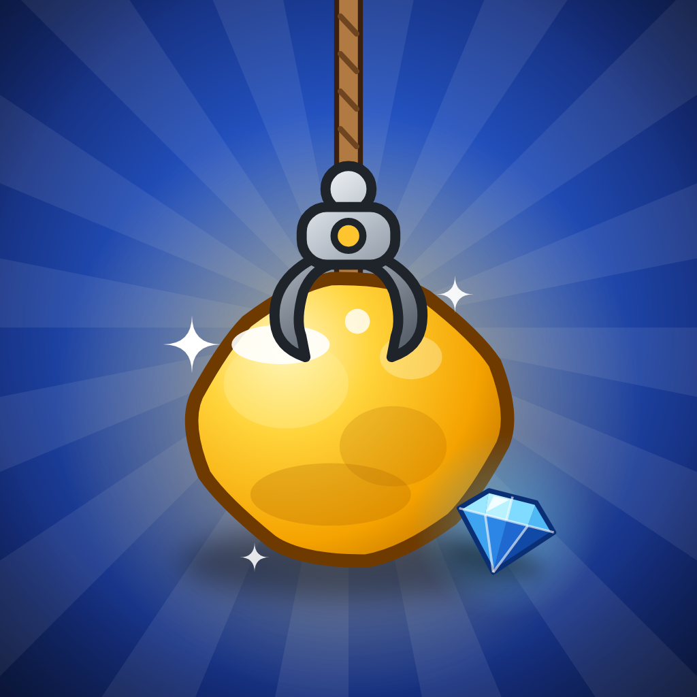

Gizlilik Politikası
Altın Yakalama · Yürürlük tarihi: 29 Ekim 2026
Bu politika, Neşet Can Salık tarafından geliştirilen Altın Yakalama uygulamasının ("Uygulama") hangi verileri nasıl işlediğini açıklar.
1. Uygulamanın kendisi topladığı veriler
Uygulama hesap ya da üyelik istemez; ad, e-posta, telefon numarası gibi kişisel bilgileri toplamaz. Altın bakiyen, açtığın bölümler ve yıldızların, satın aldığın geliştirmeler ve güçlendirmeler ile ses, titreşim ve efekt tercihlerin yalnızca cihazında saklanır, hiçbir sunucuya gönderilmez. Uygulamayı silmen bu verileri de siler.
2. Reklamlar (Google AdMob)
Uygulama ücretsizdir ve Google AdMob ile reklam gösterir. Ödüllü reklamlar tamamen isteğe bağlıdır; yalnızca sen seçtiğinde (ör. ek süre veya 2 kat ödül için) gösterilir. AdMob reklam göstermek, ölçmek ve dolandırıcılığı önlemek için şu verileri toplayabilir:
- Reklam kimliği ve cihaz tanımlayıcıları (Android'de reklam kimliği; iOS'ta IDFA'ya erişilmez)
- IP adresinden tahmin edilen yaklaşık konum
- Gösterilen reklamlar ve reklamlarla etkileşimler
- Çökme, performans ve diğer tanılama verileri
Bu verileri Google kendi politikalarına göre işler: Google Gizlilik Politikası ve Google'ın, iş ortaklarının site ve uygulamalarındaki verileri kullanımı.
3. İzin ve seçimlerin
- iOS: Uygulama App Tracking Transparency ile izleme izni istemez ve seni diğer şirketlerin uygulama ve sitelerinde izlemez. iOS'ta gösterilen reklamlar kişiselleştirilmez.
- Avrupa Ekonomik Alanı, Birleşik Krallık ve İsviçre: Google'ın onay formu ile izin istenir; seçimini uygulamadaki Ayarlar ekranında bulunan "Gizlilik Seçenekleri" düğmesinden değiştirebilirsin.
- Android: Reklam kimliğini Ayarlar → Gizlilik → Reklamlar bölümünden sıfırlayabilir ya da silebilirsin.
4. Çocuklar
Uygulama her yaşa uygun içerik barındırır ancak özellikle 13 yaşın altındaki çocuklara yönelik değildir. Reklamlar genel izleyiciye uygun (PG) içerikle sınırlandırılmıştır. 13 yaşından küçük çocuklardan bilerek kişisel veri toplamayız.
5. Verilerin saklanması ve silinmesi
Uygulamanın kendisi sunucuda veri saklamadığı için silinecek bir hesap yoktur. Cihazındaki veriler uygulamayı sildiğinde ya da Ayarlar ekranındaki "İlerlemeyi Sıfırla" düğmesini kullandığında silinir. Google'ın topladığı veriler için haklarını Google Gizlilik Politikası'ndaki yollarla kullanabilirsin.
6. Değişiklikler
Bu politika güncellenirse yeni sürüm bu sayfada, güncel yürürlük tarihiyle yayınlanır.
7. İletişim
Sorularını neset.salik@gmail.com adresine gönderebilirsin.
Privacy Policy (English)
Effective date: October 29, 2026
Altın Yakalama ("the App") is developed by Neşet Can Salık. The App requires no account and does not collect personal information such as your name or email. Your gold balance, unlocked levels and stars, purchased upgrades and power-ups, and sound, vibration and effects settings are stored only on your device and are deleted when you uninstall the App or use "İlerlemeyi Sıfırla" (Reset progress) in the App's settings.
The App is free and shows ads through Google AdMob. Rewarded ads are entirely optional and shown only when you choose them (e.g. for extra time or double rewards). AdMob may collect advertising and device identifiers (the advertising ID on Android; IDFA is not accessed on iOS), approximate location derived from your IP address, ad interactions, and crash and performance diagnostics, in order to serve and measure ads and prevent fraud. Google processes this data under its Privacy Policy and How Google uses information from sites or apps that use its services.
On iOS the App does not request tracking permission via App Tracking Transparency and does not track you across other companies' apps or websites; ads on iOS are not personalized. Users in the EEA, UK and Switzerland are asked for consent through Google's consent form and can change it via "Gizlilik Seçenekleri" (Privacy options) on the App's settings screen. On Android you can reset or delete your advertising ID in Settings → Privacy → Ads.
The App is suitable for all ages but is not specifically directed at children under 13; ads are limited to general-audience (PG) content, and we do not knowingly collect personal data from children under 13. Changes to this policy will be posted on this page with a new effective date. Contact: neset.salik@gmail.com.